If you ask an experienced photographer what prime lens to buy first, the answer is almost always 50mm.
Why? Because it sees the same as you do.
This is where the standard lens gets its name. Its view is close to the human eye. It is not exaggerated or distorted, and it is as plain as a transparent person. But this very ordinariness makes it a sharp tool in the hands of masters such as Cartier-Bresson and Ralph Gibson.
But if you think it only works for street and portraits, you underestimate it. Today let us talk about how many tricks this people's lens can pull off.
©Siddharthan Raman
Trick 1: a large aperture is not only background blur
A 50mm f/1.8 costs only a few hundred yuan, yet gives you an f/1.8 aperture. You would never get that on a zoom lens.
With a wide aperture, depth of field is shallow. Only a thin line of the image is in focus. Some see this as a flaw, but experts call it the power to choose.
You can keep the foreground sharp and blur the background to build layers. You can focus on just one eye to create a moody feel. You can even use very shallow depth of field on a row of repeated objects, for an abstract-painting look.
Note: focus must be precise at a wide aperture. Use single-point focus. Aim where you want, and do not let the camera choose for you.
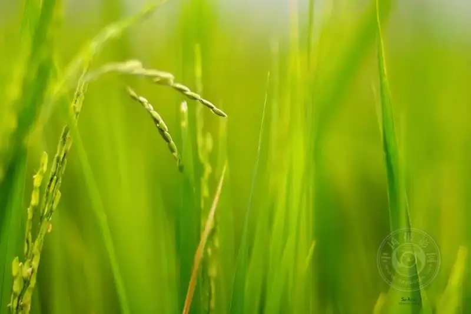
©Siddharthan Raman
Trick 2: move in closer
A good photo often has an intimate feel, as if you are overhearing a moment.
When you shoot a half-body or close-up, do not be afraid to move close. Shortening the distance does not only fill the frame. It puts you inside the mood of the scene. You will find that as the lens moves near, the emotion moves near too.
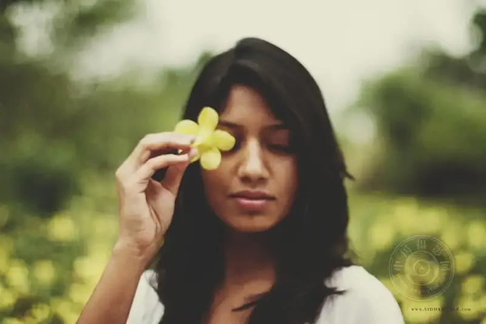
©Siddharthan Raman
Trick 3: a night-vision device in low light
When the light drops, phones and kit lenses start to struggle. They push up ISO and slow the shutter, and noise and blur arrive.
But the 50mm lens does not worry. An f/1.8 aperture lets in more than ten times the light of f/5.6. In the same scene, others need ISO 3200, and you only need ISO 400.
Without high ISO or a tripod, you can shoot clean, natural night photos hand-held.
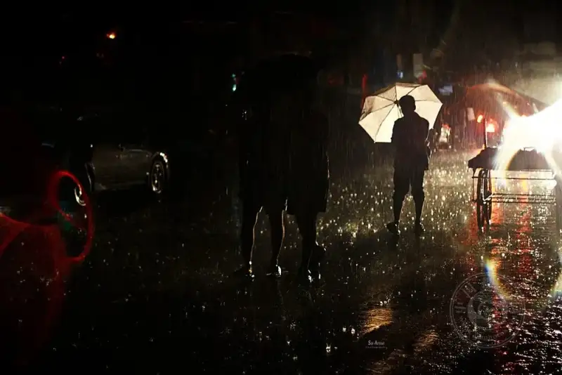
©Siddharthan Raman
Trick 4: macro without spending money
You want to shoot flowers and insects, but the price of a macro lens cools you off.
Do not rush. The 50mm has a hidden trick. Buy a cheap reverse adapter for a few dozen yuan, and mount the lens backwards. It becomes a macro lens in an instant. Autofocus is gone, but the fun of manual focus is even more addictive.
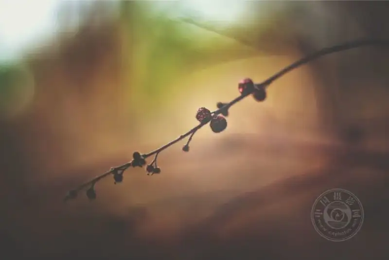
©Siddharthan Raman
✅ Why is the 50mm a must-have lens?
• A great teacher: a prime limits your framing and forces you to think, so you improve fastest.
• The best value: the f/1.8 version costs only a few hundred yuan, so anyone can afford it.
• Light as nothing: it is so light it feels light even in a pocket, and you can carry it all day.
• Strong image quality: its simple design makes it easier to get excellent optics.
• An all-rounder: portraits, street, landscape, and macro, it handles them all.
©Siddharthan Raman
Sample time
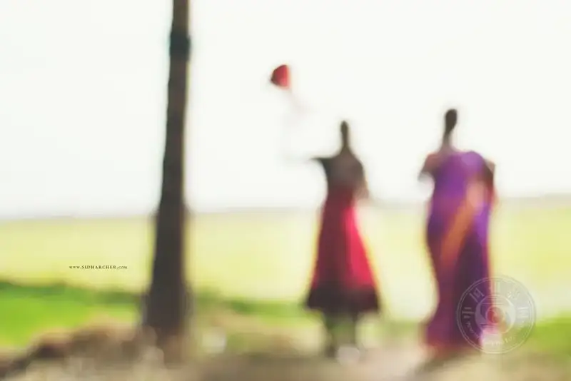
©Siddharthan Raman
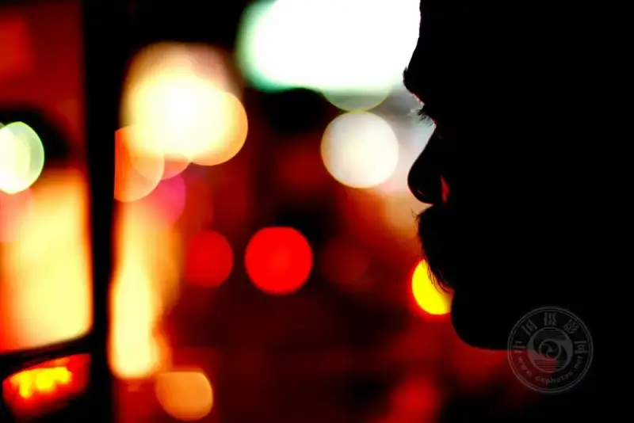
©Siddharthan Raman
©Siddharthan Raman
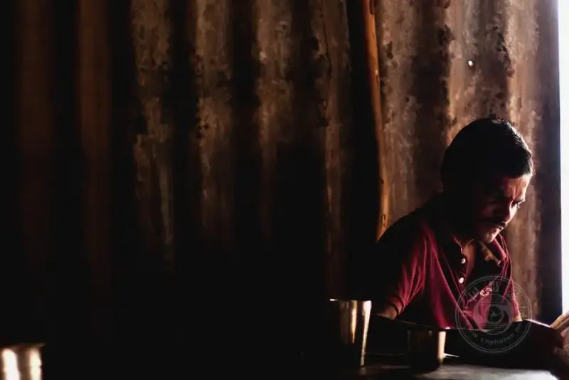
©Siddharthan Raman
©Siddharthan Raman
©Siddharthan Raman
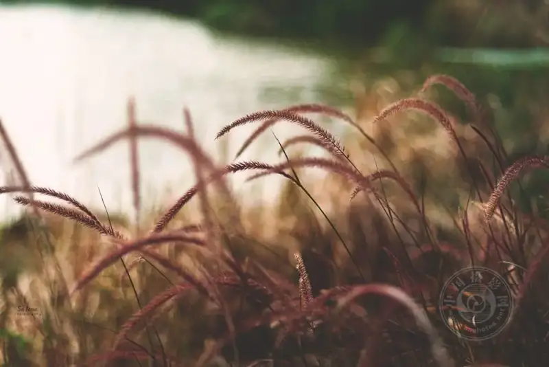
©Siddharthan Raman
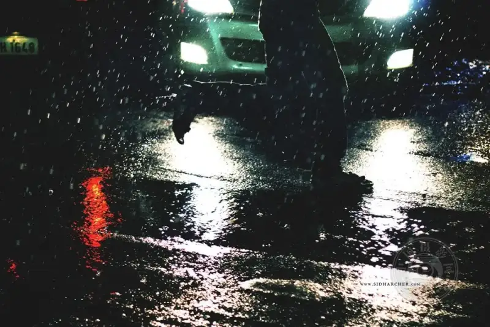
©Siddharthan Raman
©Siddharthan Raman
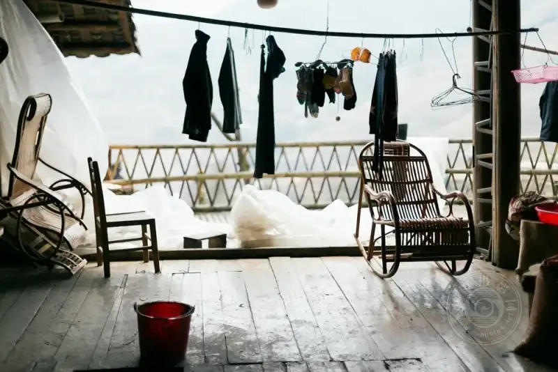
©Siddharthan Raman
©Siddharthan Raman
©Siddharthan Raman
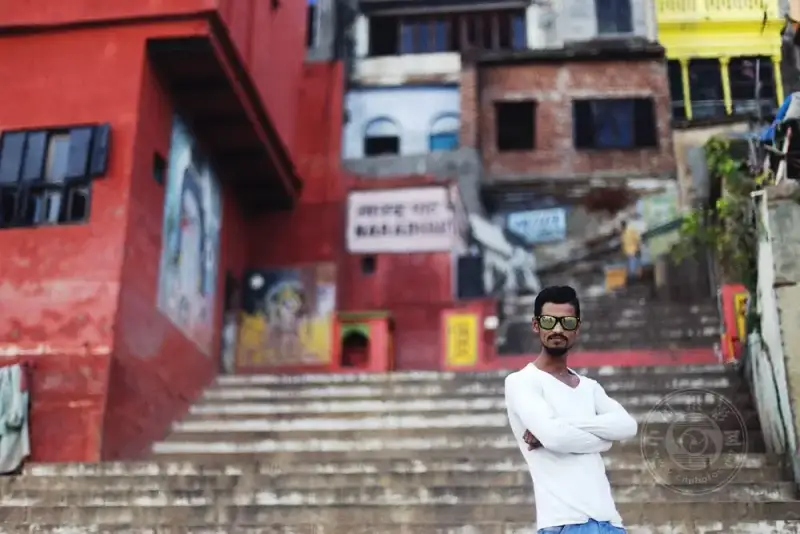
©Siddharthan Raman
A closing word
Some say a zoom lens is convenience, and a prime lens is discipline.
The 50mm is the kind of lens that slows you down and makes you think. It is not expensive, not heavy, and not flashy, but it walks every step with you from beginner to expert.
If you have not tried a prime lens yet, start with the 50mm. It may be the best investment on your photographic path.
Go take photos. Your 50mm is waiting for you.